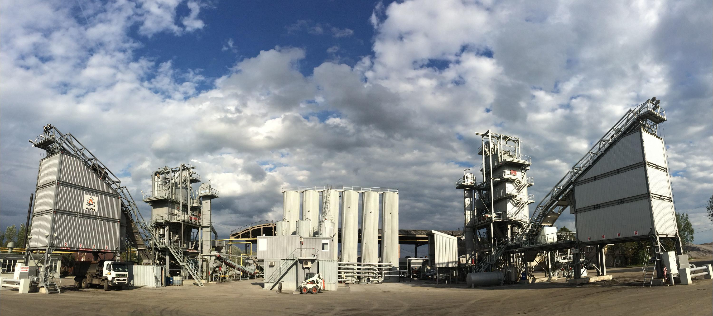

01 / База
Асфальтобетонные заводы
Производство материалов рядом с объектом и контроль состава смеси.

Строительство, реконструкция и ремонт автомобильных дорог — с собственной производственной базой, техникой и контролем качества.
Собственная база помогает держать в руках сроки, качество и результат на каждом этапе строительства.
Производство материалов рядом с объектом и контроль состава смеси.
Испытания асфальтобетона, грунтов, щебня, бетона и вяжущих материалов.
Техника и транспорт для строительства, ремонта и содержания дорог.
Геодезия и цифровой контроль уплотнения асфальтобетона на объекте.
«Атырау – Орал» республикалық маңызы бар автомобиль жолының 372–492 шақырым аралығындағы учаскесінде орташа жөндеу жұмыстары жалғасуда.
Қазіргі таңда асфальтбетон жамылғысын төсеу, жол жиектерін нығайту және жол инфрақұрылымын абаттандыру жұмыстары жүргізілуде.
Жобаны сапалы әрі белгіленген мерзімде аяқтау үшін командамыз күн сайын еңбек етуде.
САПА – БАСТЫ БАСЫМДЫҒЫМЫЗ!
Продолжается средний ремонт автомобильной дороги республиканского значения «Атырау — Уральск», км 372–492.
На сегодняшний день ведутся работы по укладке асфальтобетонного покрытия, укреплению обочин и благоустройству дорожной инфраструктуры.
Наша команда ежедневно трудится, чтобы качественно и своевременно завершить проект.
КАЧЕСТВО В ПРИОРИТЕТЕ! 🚧🛣️
🚧 ҚАРҚЫНДЫ КҮШЕЙТУДЕМІЗ!
Күннің аптабы, жел мен шаң – ауқымды реконструкция жұмыстарының күнделікті көрінісі.
Қазіргі таңда барлық учаскелерде жұмыс қатар жүргізілуде: жер төсемі салынуда, жолдың негізіне қосымша ОМС қабаты төселуде. Асфальт жабынын бір мезгілде екі асфальт төсегіш техникасы жайып жатыр. Сапалы тығыздауды қамтамасыз ету үшін көптеген жол катоктары жұмылдырылған.
Әрбір қабат, техниканың әрбір жүрісі және жолдың әрбір метрі қатаң бақылауда.
Қарқынды күшейтіп, жұмыс көлемін ұлғайтып келеміз. Құрылыс жұмыстары жоспарлы түрде жалғасуда!
САПА – БАСТЫ БАСЫМДЫҚ! 🛣️
🚧 НАБИРАЕМ ТЕМП!
Солнце, жара, ветер и пыль — настоящие будни масштабной реконструкции.
Работы идут одновременно на всех участках: возводим земляное полотно, устраиваем дополнительный слой ОМС, асфальт укладываем сразу двумя асфальтоукладчиками. Для качественного уплотнения задействовано большое количество катков.
Каждый слой, каждый проход техники и каждый метр — под контролем.
Темп набираем. Объёмы увеличиваем. Работа продолжается!
КАЧЕСТВО В ПРИОРИТЕТЕ! 🛣️
📍Күндіз ел жүріп өтетін жол - түнде де біз үшін үлкен еңбек алаңы. Жолшылар жарығы аз түнгі жолда да өз жұмысын жалғастыруда.
🚧Бұл — көзге көріне бермейтін, бірақ ел игілігіне қызмет ететін еңбек. Жолдың әр шақырымында жолшының маңдай тері, жауапкершілігі мен адалдығы бар.
📍Дорога, по которой люди едут днём, ночью становится для нас большой рабочей площадкой.
🚧 Даже в тёмное время суток, при недостаточном освещении, дорожники продолжают свою работу.
Это труд, который не всегда заметен, но служит на благо людей. В каждом километре дороги — усердие, ответственность и преданность своему делу наших дорожников.
КАЧЕСТВО В ПРИОРИТЕТЕ!
Качество закладывается ещё до выхода техники на объект — через проверку материалов, рецептуры и параметров уплотнения.
Проверяем грунты, щебень, битум и бетонные смеси.
Подбираем состав асфальтобетонной смеси под задачу проекта.
Контролируем параметры работ и фиксируем результат на объекте.
От небольших строительных работ и субподряда — к собственной производственной базе, лаборатории и крупным инфраструктурным проектам.
«Строить дороги во благо людей и быть профессионалом своего дела!»
Начало предпринимательского пути.
Основано ТОО «ДСК Приоритет».
Приобретён собственный асфальтобетонный завод.
Компания стала победителем премии «Іскер».
Свяжитесь с командой «ДСК Приоритет», чтобы обсудить проект, лабораторные испытания или партнёрство.